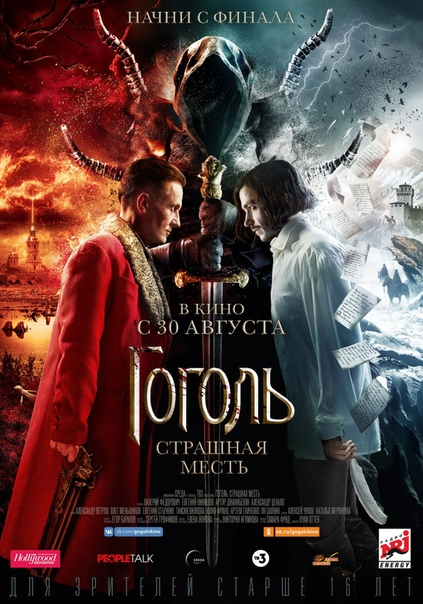
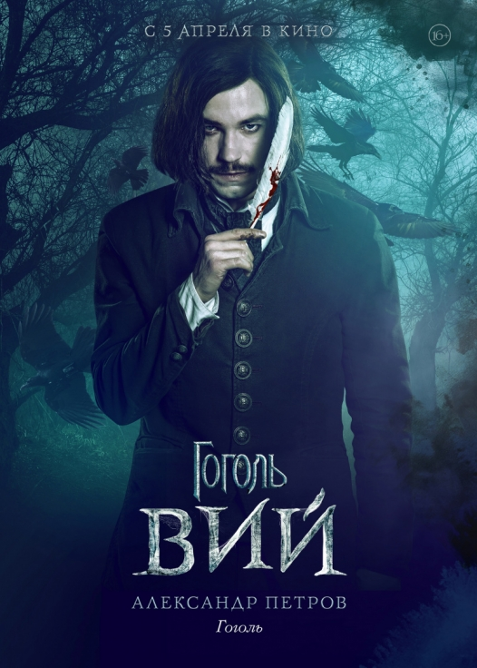

«Го́голь. Нача́ло» — первая часть российского киносериала «Гоголь» от продюсерской компании «Среда», снятая режиссёром Егором Барановым по мотивам произведений Н. В. Гоголя из сборника «Вечера на хуторе близ Диканьки». Главную роль сыграл Александр Петров. Фильм вышел в широкий прокат 31 августа 2017 года.
«Гоголь. Начало» — первый из трёх фильмов киносериала «Гоголь», первого сериала России, который было решено выпустить в кинопрокат.
Фильм «Гоголь. Вий» вышел в прокат 5 апреля 2018 года, «Гоголь. Страшная месть» — 30 августа 2018 года. Затем три фильма разбились на 6 часовых серий, которые впоследствии вместе с ещё двумя сериями, не выходившими в прокат и не влияющими на общую драматургию, показали на телеканале «ТВ-3».

Гоголь. Страшная месть
«Го́голь. Стра́шная месть» — российский триллер режиссёра Егора Баранова от продюсерской компании «Среда», заключительная часть первой трилогии по мотивам произведений Н. В. Гоголя. Главные роли сыграли Александр Петров, Олег Меньшиков, Евгений Стычкин и Таисия Вилкова.
Выход фильма в широкий прокат в России состоялся 30 августа 2018 года.
Слоган фильма: «Начни с финала».
«Гоголь. Страшная месть» — третий из трёх фильмов киносериала «Гоголь», первого сериала России, который было решено выпустить в кинопрокат.

Гоголь. Вий
«Го́голь. Вий» — российский фильм в жанре детектив режиссёра Егора Баранова по мотивам произведений Н. В. Гоголя. Продолжение фильма «Гоголь. Начало». Главные роли сыграли Александр Петров, Евгений Стычкин и Ян Цапник. Премьера фильма в России состоялась 5 апреля 2018 года.
Слоган фильма: «Не выходи из круга».
«Гоголь. Вий» — второй из трёх фильмов киносериала «Гоголь», первого сериала России, который было решено выпустить в кинопрокат.